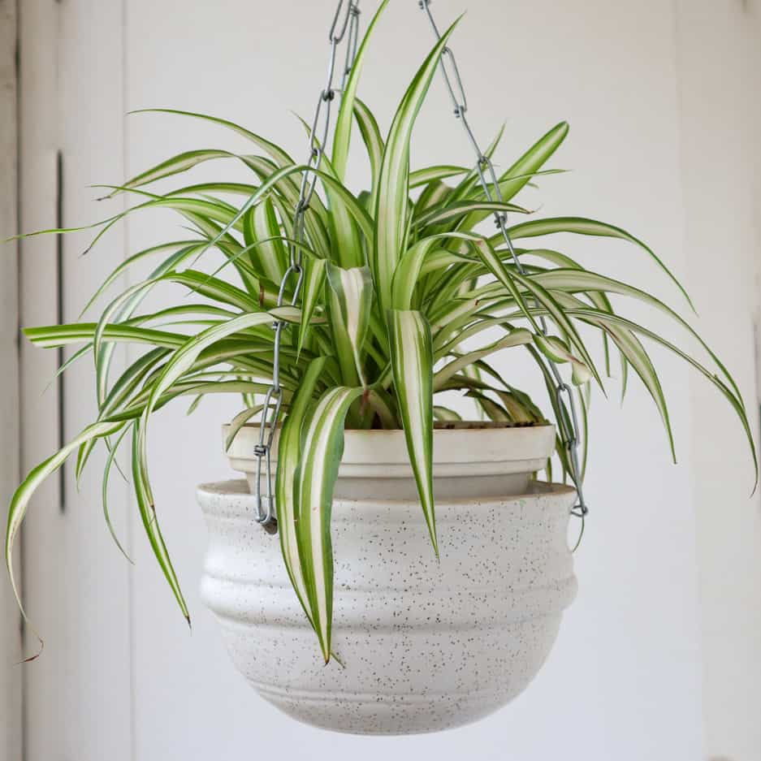

Spider Plant
Chlorophytum comosum
Spider plants, known for their arching foliage and ability to produce "spiderettes" or baby plants, are easy to care for.
Light- Thrive in bright, indirect light, but can tolerate lower light conditions. Avoid direct sunlight, as it can scorch their leaves. They can also adapt to artificial light indoors.
Water- Keep the soil evenly moist during the growing season (spring and summer). Water the plant thoroughly when the top inch of soil feels dry to the touch, allowing excess water to drain away. Reduce watering in the winter, letting the soil dry out more between waterings to prevent root rot.
Pot- Choose a container that's porous, like terracotta, and ensure it has a drainage hole. Spider plants hate to sit in standing water.